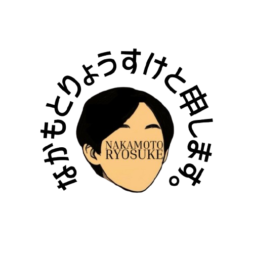
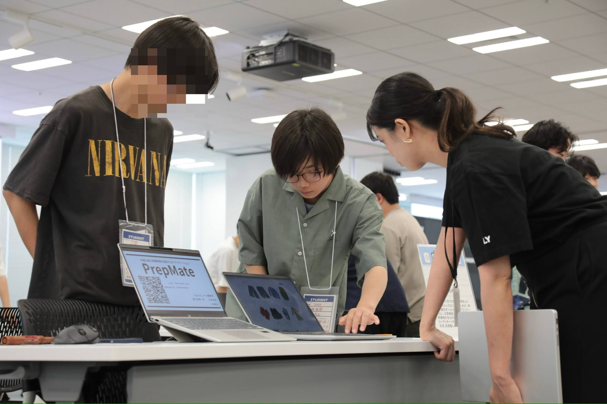

名前：中本怜祐
まちごとアシスト代表
活動：STEAM教育や地域課題のソリューションづくりに奮闘しています。
所属：香川高専電子システム工学科
出身：岡山県
About Me
2010
岡山県岡山市に生まれる
2019
父がやっていた
プログラミング講座に通う
プログラミング講座に通う
2023
空手で全国出場
起業体験プログラムに参加して
自由研究ワークショップを開催
自由研究ワークショップを開催
過去問を共有するアプリ「らくべん」を開発
2024
岡山の公民館で
プログラミング講座を開く
プログラミング講座を開く
2025
香川高専に入学
LINE YAHOO HACKU参加
朝の時間効率化アプリ「PrepMate」を開発
朝の時間効率化アプリ「PrepMate」を開発
現在
プログラミング教室を運営中
AKATSUKIプロジェクトに採択
100万円の資金をもとに活動しています。
高専プログラミングコンテスト競技部門出場
AKATSUKIプロジェクトに採択
100万円の資金をもとに活動しています。
高専プログラミングコンテスト競技部門出場
Works



LINE YAHOO HACKU
LINE YAHOO HACKUに参加して朝の時間効率化アプリ「PrepMate」を開発しました。